公司自媒体内容、品牌物料、数据报告、网页项目与 AI 创作实践都在这里。按分类筛选，或换个排序方式翻一翻。
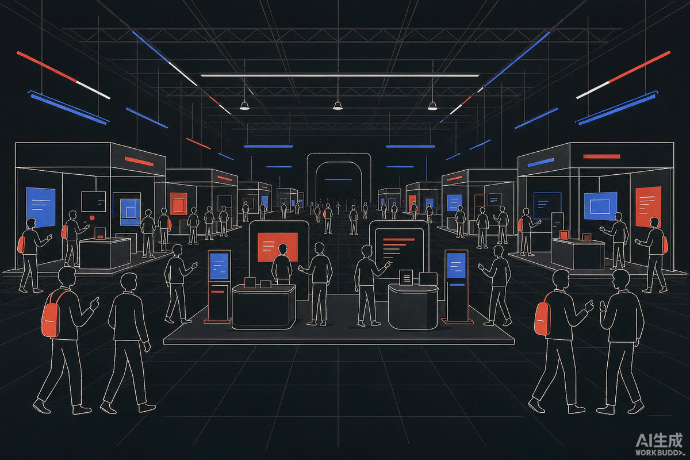
展会参展宣传视频：文稿撰写、拍摄统筹、剪辑与成片交付，配合物博会展前推广节奏投放。
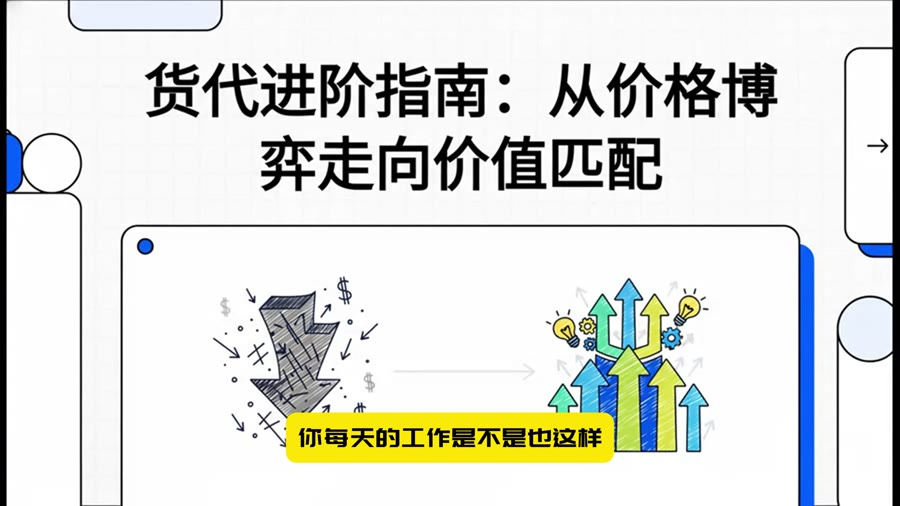
把「货代进阶指南」这类行业干货转成可刷的短视频：选题、版面切片、视觉呈现与发布节奏一条龙，持续追踪播放量与互动率。
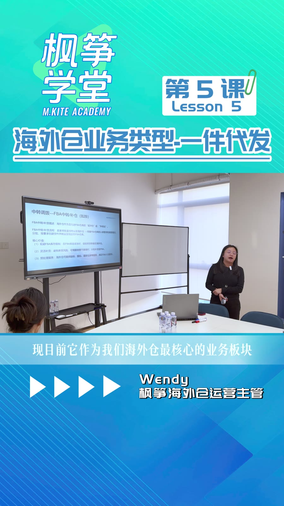
企业培训内容的全流程制作：从「海外仓业务类型」等课程选题，到拍摄、剪辑、品牌版式包装与字幕规范，输出操作文档归档飞书。
节日节点策划的公司场景宣传视频，跟进拍摄执行与成片交付，维持账号稳定更新节奏。
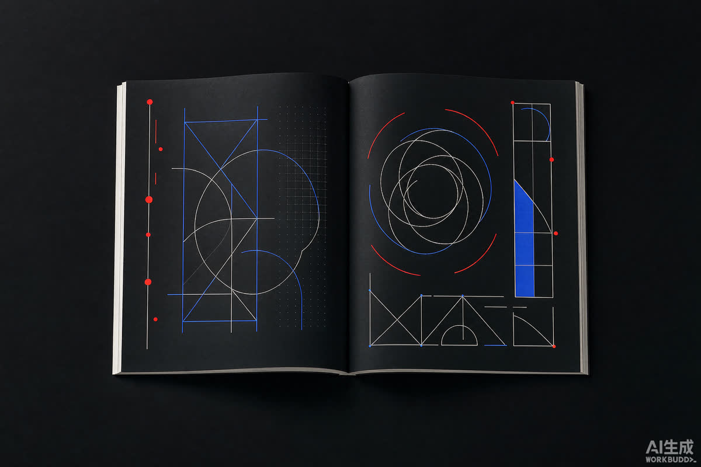
主导画册中英文版迭代定稿（vr2.1），覆盖公司介绍、业务线与海外仓服务板块的多主体统一呈现。
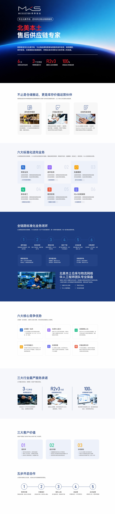
移动端公司介绍页的内容维护与迭代：北美本土售后供应链专家定位，六大核心优势与全链路服务结构化呈现。
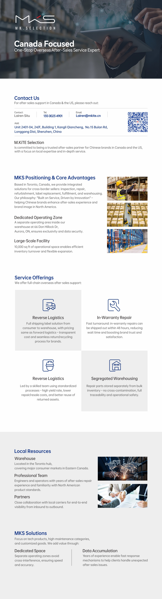
面向北美华人的售后供应链服务介绍：Contact Us、核心优势、服务板块与本地资源的中英双语文案与版面组织。
推动品牌表情包 IP 完成微信平台上架与图形迭代，含著作权登记，让品牌以更轻的方式进入用户聊天场景。
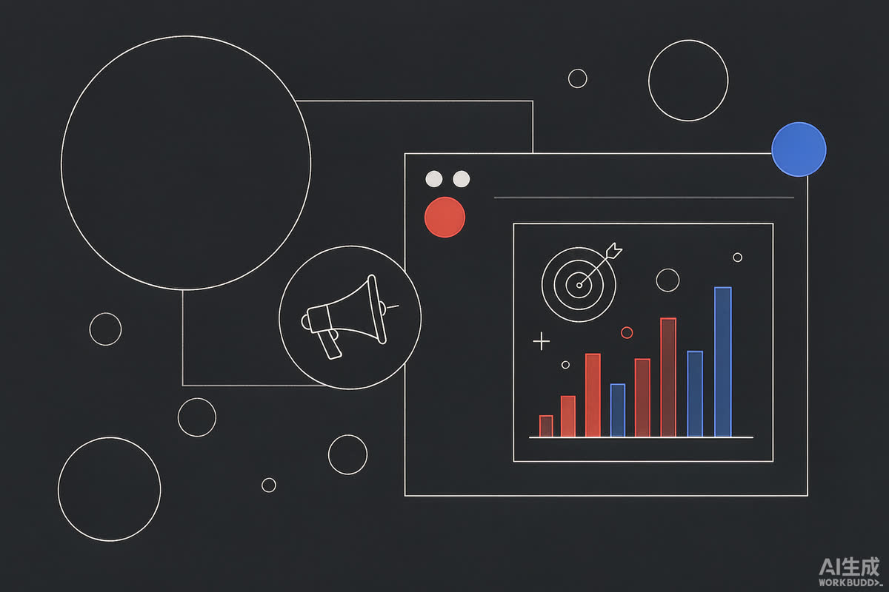
从平台规则、文案、素材到人群包与广告上架的完整链路文档，作为投放侧的标准参考。
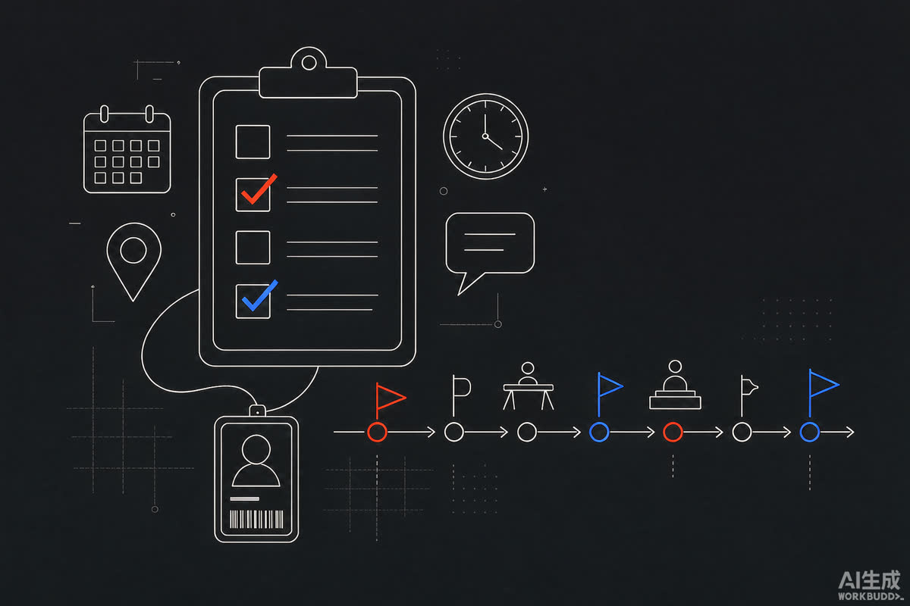
展会与线下活动的全流程操作规范：筹备、物料、现场、复盘四个阶段，迭代至 ver2.0 归档飞书。
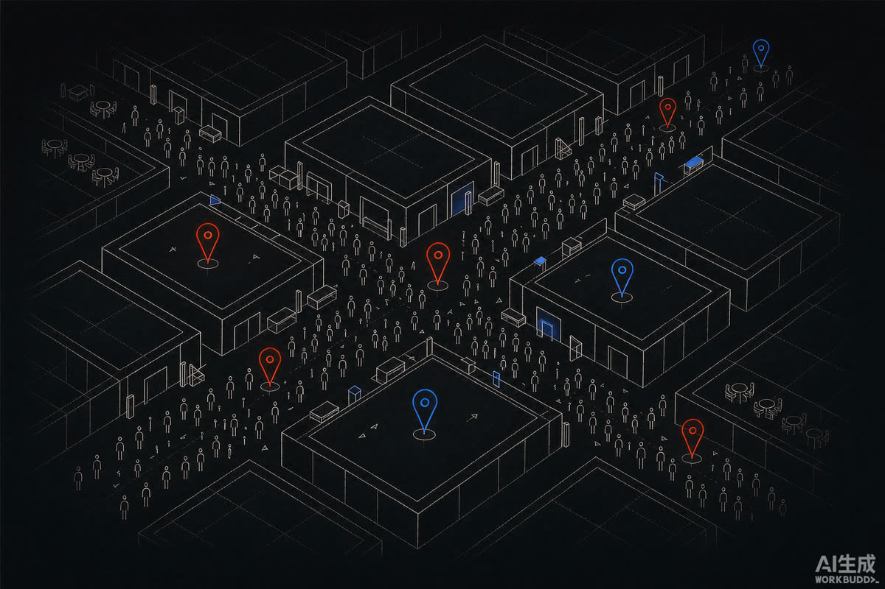
参展数据、线索质量与现场执行的完整复盘报告，为后续展位决策提供依据。
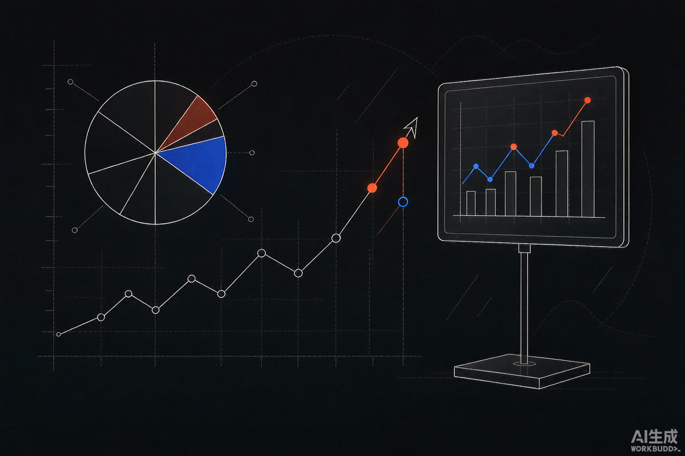
年度部门数据汇报材料的撰写与可视化优化，整合全年各平台数据口径。
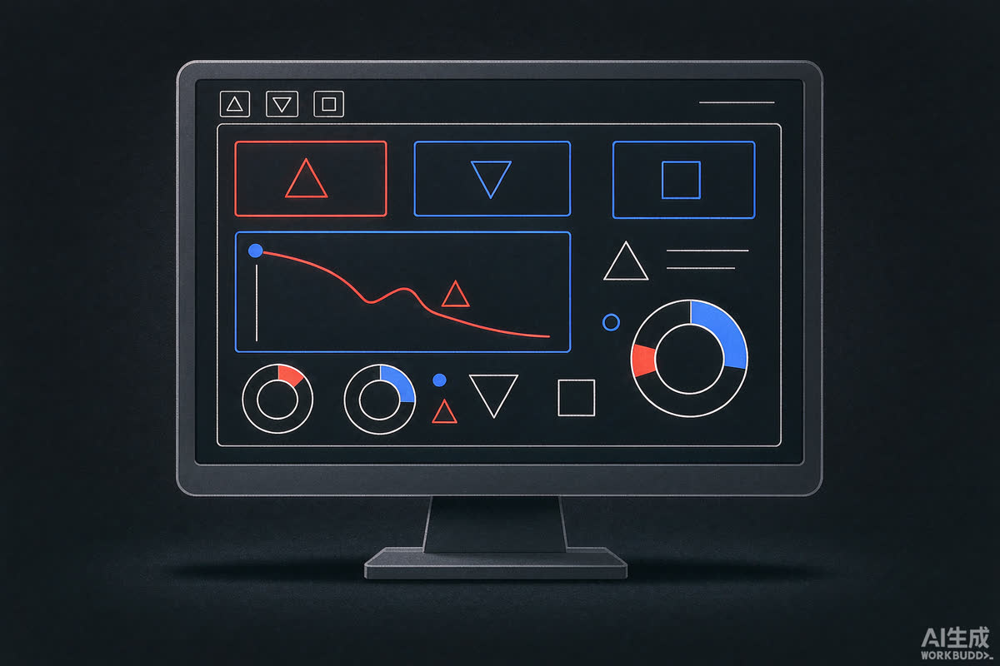
独立搭建的市场日常数据看板：多平台数据整合、统一口径、按月输出支撑决策。
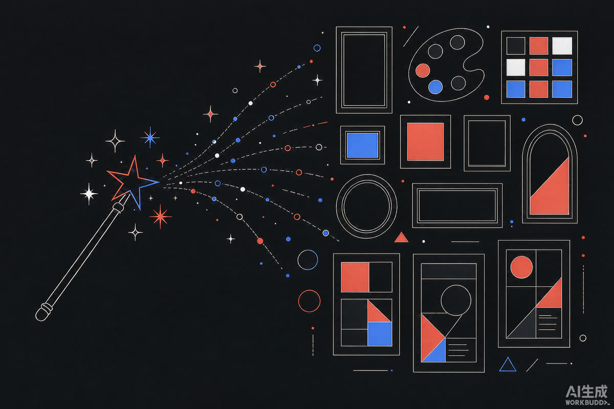
用 AI 生成海报方向图与物料创意稿：关键词迭代、风格锚定、批量出图筛稿，把品牌视觉的「想方向」环节从半天压缩到半小时。
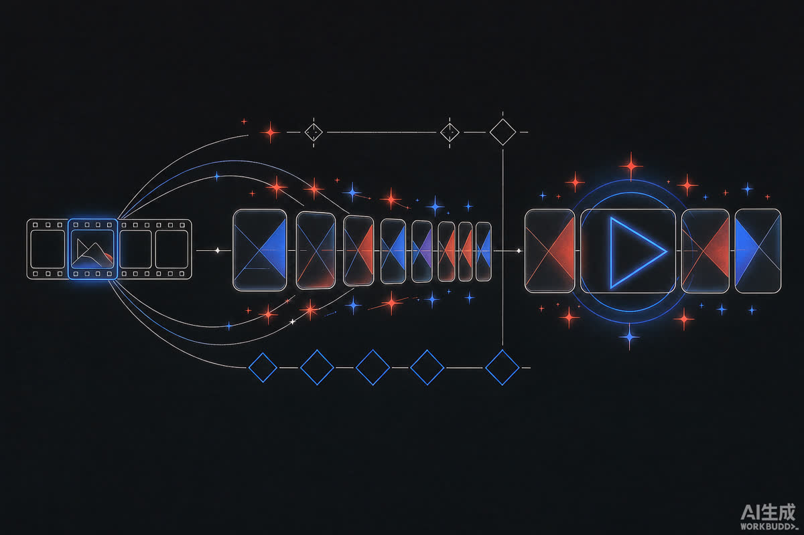
探索 AI 视频在内容生产里的落地：单图关键帧延展、图生视频，再到剪映组装成片，为短视频生产补充一条低成本管线。
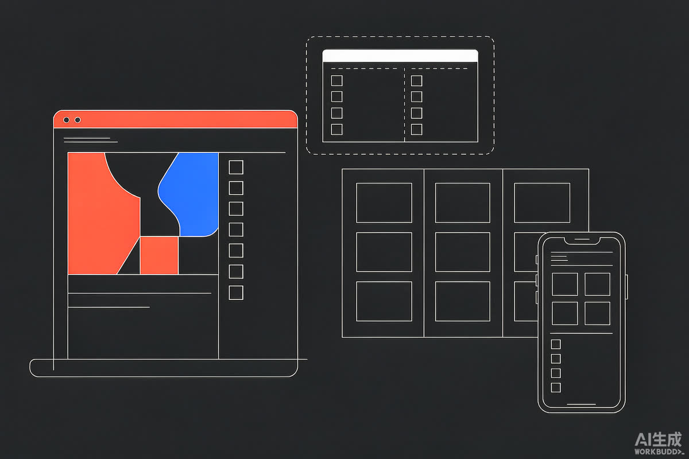
五页响应式站点：桌面 / 平板 / 手机三档重排版，滚动入场动画、作品筛选排序、PDF 简历下载，0 框架依赖——软件技术出身的前端功底。